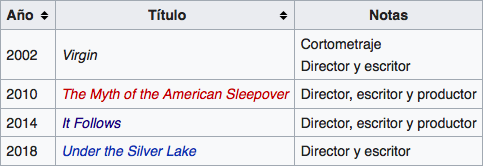

David Robert Mitchell
David Robert Mitchell es un director de cine y guionista estadounidense, reconocido por dirigir la alcamada película de terror de 2014 It Follows.
Mitchell nació en Clawson, Michigan. Se graduó en la Universidad Estatal de Florida con un MFA en producción audiovisual. Su primer película como director, escritor y productor fue The Myth of the American Sleepover (2010), un filme dramático adolescente. Adele Romanski, amiga de la infancia de Mitchell que más tarde ganaría un premio Óscar por la laureada película Moonlight, fue una de las productoras de la cinta. En una entrevista, Mitchell afirmó que gastó unos 50000 dólares en la filmación de la película. Cuatro años más tarde logró reconocimiento internacional tras dirigir la película de terror It Follows. La cinta fue aclamada por la crítica y obtuvo éxito de taquilla teniendo en cuenta su escaso presupuesto. Dos años después integró el jurado en el Festival de Cannes. Su última película, Under the Silver Lake, fue filmada en Los Ángeles y protagonizada por Andrew Garfield.
